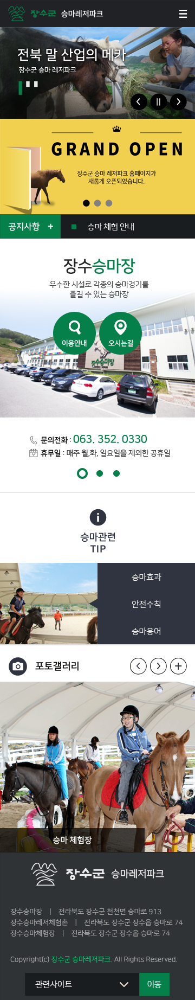
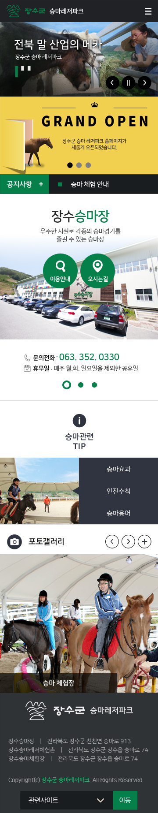

const accordion = document.querySelectorAll(".accordion");
for (let i = 0; i < accordion.length; i++) {
accordion[i].addEventListener("click", function() {
this.classList.toggle("active");
const panel = this.nextElementSibling;
if (panel.style.maxHeight) {
panel.style.maxHeight = '';
} else {
panel.style.maxHeight = panel.scrollHeight + "px";
}
});
}
자주찾는 질문의 아코디언 탭
나중에 추가된 게시판. 간단하게 처리 할 수 있어 보였기에 처리하였다. button의 개수만큼 내용이 나오며 nextElementSibling를 통해 button뒤의 div.panel만 가져왔다.
 
